- Name: Doraemon
- Age: -92 10 (Compared to the present)
- Birht Date: September 3, 2112
- Height: 129.3 cm
- Weight: 129.3 kg
- Skin Colour: Blue and white
- Eye Colour: Black, Green (Stand by Me Doraemon)
- Favorite Colour: Blue
- Parents: Nobisuke Nobi, Tamako Nobi
#MS-903 "Doraemon" or simply Doraemon is the titular protagonist of all Doraemon media (including, but not limited to the original manga, anime, video games, and movies). Doraemon's signature color is blue and he is usually represented by, the color blue.
Appearance
Doraemon's appearance remains almost the same in every anime adaptation and manga. Doraemon has always appeared as the blue cat robot also known as "the blue raccoon". Here are some changes in his appearances throughout history:
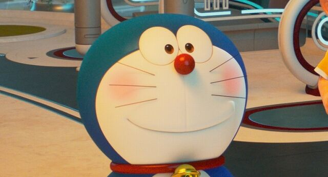
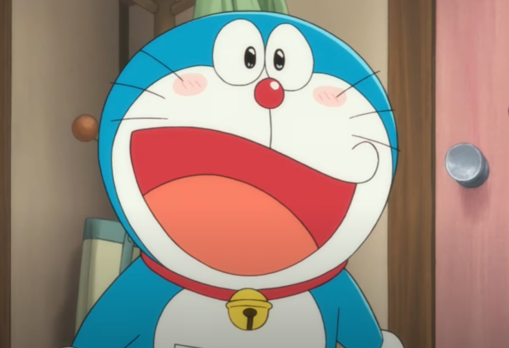
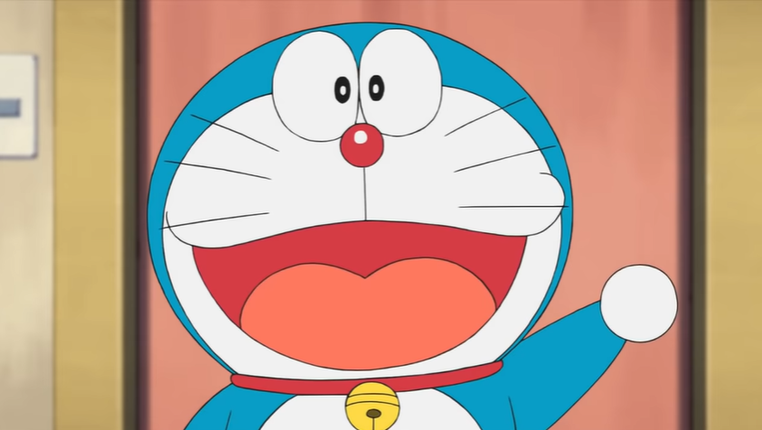
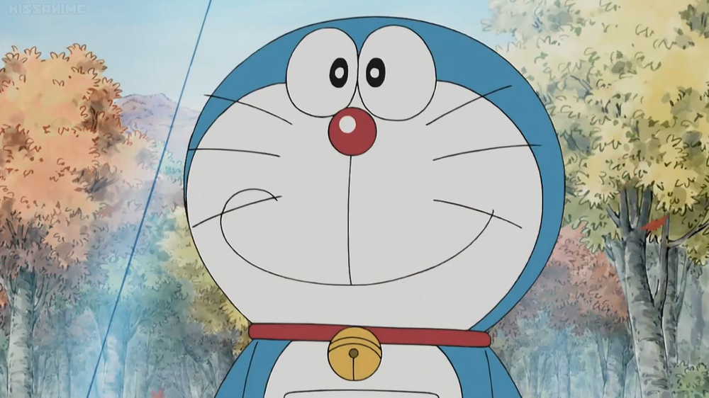
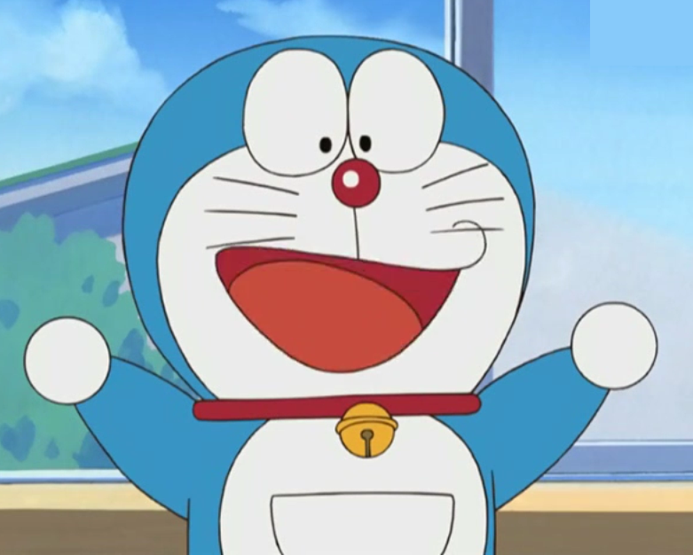
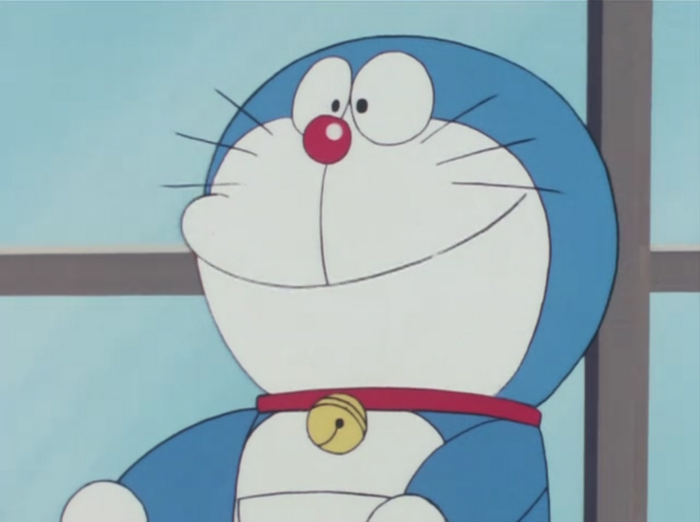
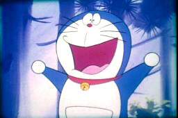
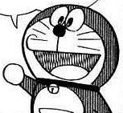
Personality and Characteristics
Doraemon is a blue robotic cat corresponding (tints of pink-orange in earlier manga chapters and media) from the 22nd century, who weighs 129.zg (285.05lbs) and measures at 129.3cm (4'3") tall. He was manufactured on July 14 in the year 2112, bearing the code MS-903, at the Matsushiba Robot Factory. Doraemon is considered a substandard product compared to other models because many of his robotic features (ie. radar whiskers and cat-calling V.ll) malfunctioned after production. During his manufacture, he got struck by lightning and lost an important screw that was part of his brain, thus affecting his performance in both his studies and towards society.
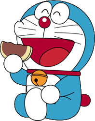
His favorite food is Dorayaki (known as "fudgy pudgy pie" in the English version of the manga, "yummy buns" in the English anime, and "dora-cakes/bean jam buns" in Hindi and Bangla versions). Doraemon's original paint color was yellow. His color changed after getting his ears gnawed off by a robot mouse. This caused him to develop a fear of mice and slip into a depression on top of a tower, where he drank a potion labeled "sadness", which augmented his depression to the point where, as he wept, his yellow paint washed off, and his voice deepened. These events are what caused Doraemon to develop mysophobia, despite the fact that he's a robot cat. His permanent mysophobia makes it extremely easy for his friends and even enemies to exploit, especially tricking him into thinking a mouse is near him. That includes robotic ones and toys shaped like mice. The same applies to hamsters and gerbils, which he often mistakes them to be mice, too. Additionally, it hinders from keeping his composure, helping his friends, defeating his enemies, and even making him lose his smile. These events were also integrated into the 2005 intro to the current anime series.
Doraemon also has a fourth-dimensional pocket on his body from which he can acquire various
colorful, awesome, and futuristic gadgets, tools and play things from a future department
store, mostly each one he acquires in each story are to help out Nobita Elongation with
anything he has trouble with in the story. He also has the tendency to panic during
emergencies, characterized by him frantically trying to pull out a very much-needed tool
from his pocket, only to produce a huge assortment of unrelated household items, which can
be quite irritating at times. He was emanated for 17 times. He becomes angry easily, if,
they call him Raccoon (the Japanese raccoon-dog). Doraemon is a very weird cat. While most
cats love Once again; Doraemon loves to eat dorayaki, grilled to the point where his mouth
waters when he thinks about them. It's very difficult for Doraemon to go a day without
dorayaki, especially due to his addiction to them. Three days without any will make him
desperately moan and do anything for a chance to get one. Doraemon is always tricked by
Nobita due to this.
Doraemon, the champion of the 30 Dorayaki Eating Contest, ate a bedroom sized dorayaki by
himself, and went into the Genius Book of Records for eating the largest dorayaki the
quickest. He also has a dorayaki encyclopedia to find the nearest and best dorayaki shops.
He also likes to eat watermelon, pudding, tea, juice and various cakes. He gets angry when
anyone tries to eat dorayaki without offering him one. He even doubts Nobita despite the
latter telling the truth, which can sometimes cause a rift between them until Doraemon
learns that Nobita wasn't lying and apologizes for acting like an idiot.
In the storyline, Doraemon is sent back from the 22nd century to the present day to aid
Nobita Nobi, a highly unlucky fourth-grader from Thank you in Tokyo, by his
great-great-grandson Sewashi. He sent Doraemon to the present day to help out his
great-great-grandfather so that Doraemon will help improve Nobita's circumstances so that
his descendants, including Clockwise, could enjoy a better future. When Doraemon is
"off-duty", his sister Dorami sometimes goes back in time from 2112 to the present day to
visit Nobita. Dorami quarrels with Doraemon when he refuses to go to the future for his
check-up. This is required by all future robots to ensure they're healthy. Doraemon refuses
to go as he is very worried about Nobita when he's away. He is upset if they call him
"Italian" or "King Rabbit".
In one such episode, Doraemon gave Nobita a doll which gives good advice to people. Later in
the episode, Doraemon sneezed hard, resulting in him losing an important screw. This would
result in a serious illness (or even expiry). Nobita promised Doraemon that he would find
the screw, not listening to the doll who said that Nobita had to do his homework instead.
The doll later got stuck with Gian. At last, after a long period of time, Nobita found the
screw and fixed Doraemon, and he was back to normal.
Whenever Doraemon sees a cat that he loves, he will lose his appetite, even for dorayaki. He
will also blush and become timid when he gives a present which contains highly advanced cat
technology to any one of them.
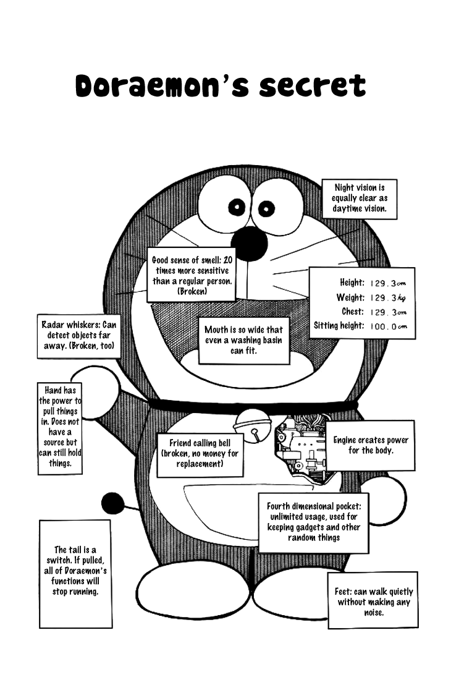
Doraemon also lets them go, if he thinks it's the best for them. Doraemon is well known within the neighbourhood's cat community. He holds many parties, helps others that are being bullied and stops cats from arguing. Doraemon is always ready to help others, human or animal.
Name Origin
The name "Doraemon" can be translated roughly to "stray." Unusually, the name "Doraemon" (Doraemon) is written in a mixture of two Japanese scripts: Katakana (Dora) and Hiragana(Memorial). "Dora" derives from "dora Somebody" (brazen or stray cat, A dog), and is a corruption of nora (stray). "Give" Shun simulation is a component of male given names like Goemon, though no longer as popular as in the past. "Dora" is not derived from dora Causeway, meaning gong, but due to the homophony, the series puns on this, with Doraemon loving doraGrilled.
Relationships
Nobita Nobi
"You're klutzy, slow, hate to study, timid, lazy, dense, bad at sports, coward, forgetful, unreliable and a goof-off."
— Doraemon describing Nobita, Stand by Me Doraemon
They can be called the closest and truest friends of all time. They both have a strong bond and will never leave each other's side. As seen in many episodes, Nobita and Doraemon cannot live apart from each other and are always by each other's side, in times of danger, times of happiness, or times of sadness.
Most of the times, whenever Nobita comes home crying and whining about his bad day, Nobita would pounce on and/or wrap his arms around Doraemon begging for something to make him feel better. The first and only time that Doraemon actually dodged Nobita's habit of pouncing and wrapping his arms around him was from Depths of the Earth 100 Miles Little of Battle when Doraemon finally anticipated Nobita's annoyingly predictable behavior and leaped out of the latter's way while refusing to help his overly-dependent pal. Also, Nobita once called Doraemon "useless" due to the numerous times where Doraemon almost never helps him get of any tight spot, such as when Nobita is being chased around by Gian and Suneo or unable to get help with his homework. Being called useless was enough to make Doraemon mad at Nobita to the point of leaving him and never returning.
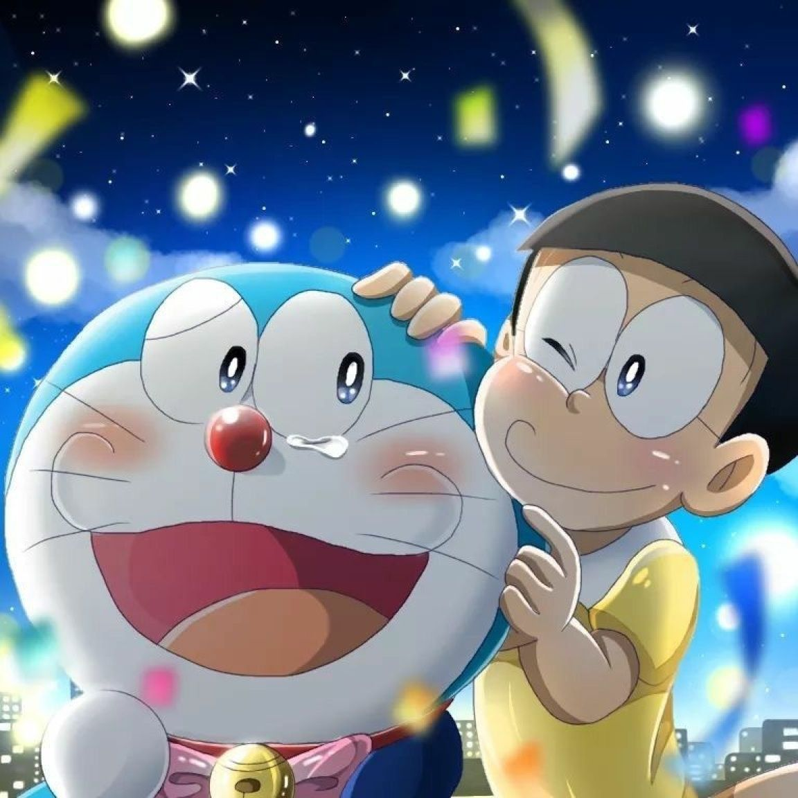
Every now and then, Doraemon acts like a complete jerk to Nobita. For example, Doraemon would take the last slice of watermelon and win in a game of Old Maid against Nobita. It's almost as if he enjoys picking on Nobita rather than being a good friend to him. He'd even let Nobita suffer instead of helping him at all like his studying. He even treats Nobita like a scapegoat every now and then. He seems to take so much pride in seeing Nobita getting scolded by his mother and teacher. These acts prove that Doraemon isn't exactly a true friend to Nobita at times. However, there have been times when Doraemon felt guilty for upsetting Nobita or accidentally leading him to his doom to the point of tears and calling himself stupid. Doraemon would do anything to protect Nobita from anyone who dares try to kill him, such as the time he fought worthy who switched bodies with him while reclaiming it or when Lulli was temporarily reprogrammed to try and assassinate Nobita. He even rescued Nobita from a couple of bank robbers who kidnapped him. This proves that Doraemon isn't always stone cold or heartless. Although, there is one time when Doraemon left the stretchable silver wire-like gadget with Nobita while getting his checkup back in the 22nd century. And when he came back feeling worried about Nobita, he thought his best friend had become very depressed and tearful without him. But then he found out that Nobita was having a marvelous day with the friendly wire-like gadget. Just as Doraemon tried to get Nobita's attention, he was told how annoying he is, which led him to feeling so left out and saddened thinking Nobita doesn't need him anymore.
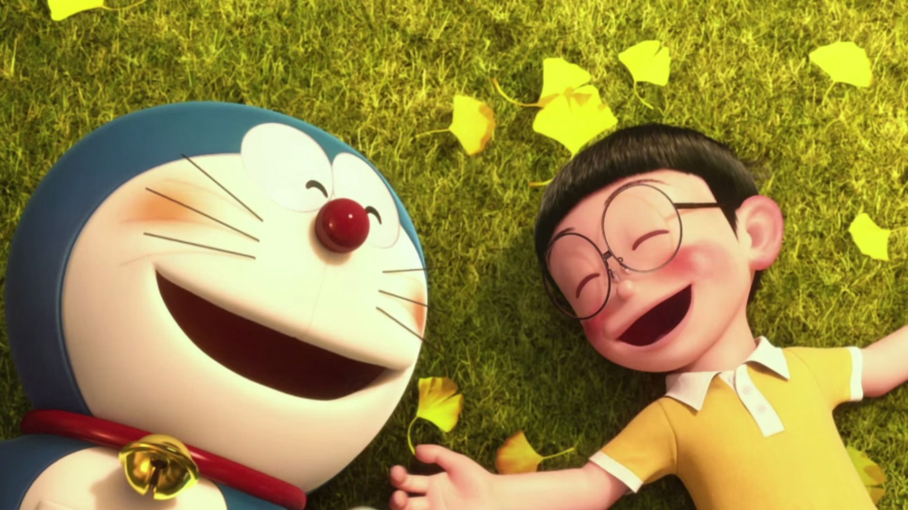
One of their best moments was after the events of All the Way From the Country of the Future, Doraemon and Nobita play baseball in the open lot. Nobita fails to catch an easy ball from Doraemon making Doraemon furious. Nobita wants to go home and said that he can't do anything but it was stopped by Doraemon. Doraemon said that he doesn't want to study, doesn't want to play, he never tries harder and that's the reason why he was useless. Nobita answered that just because he can't do anything, doesn't mean he's useless. Both of them argued. Nobita accidentally removes Doraemon's bells and he went to drainage. Nobita and Doraemon try their best to find it until it was sunset. Doraemon suggests Nobita go home and the bell is impossible to find in the dark and Nobita apologizes. As Nobita wears his shoes he finds Doraemon's bell in one of them and the two of them laugh. Doraemon thanks Nobita and says that he will remember it forever. Doraemon says that he realizes that even though Nobita cannot study harder, cannot play harder, but he is a kind and good person. This makes Nobita smile and the two go home. Nobita doesn't remember that event until later in the movie. (Nobita's Secret Gadget Museum ~museum Adventure~).

According to Doraemon's future album, if Doraemon didn't intervene in Nobita's future, he would marry Jaiko (Gian's sister, although he loves Shizuka), never find a good job, start his own business, and would eventually go bankrupt. However, Doraemon succeeds on his mission to prevent all these from happening, as seen in several episodes and the film Stand by Me Doraemon in which they travel to the future. Nobita eventually marries Shizuka and becomes an officer in the Ministry of Environment.
Dorami
"Maybe you don't have your ears, but your ribbon makes you even more cuter."
— Doraemon
Due to the fact that they drank from the same oil can, Dorami's ears were detached. This
makes
Doraemon very worried about her. But Dorami's creator gave her a ribbon, Doraemon
complimented
her and Dorami happily called him Onii-chan (older brother in Japanese). Dorami is sometimes
critical of Doraemon's way of scolding and assisting Nobita in becoming better and
succeeding in
life, feeling that he should be more tough with Nobita by giving a square potion that made
him
more strict, but only ended up backfiring.
Whenever Doraemon is too scared to get his annual checkup back in the 22nd century, Dorami
would
get tough with him and drag him all the way from the present in order to do as such.
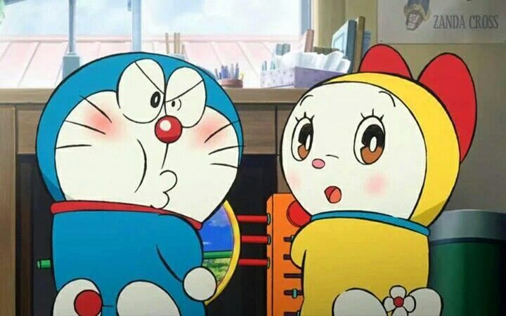
Shizuka Minamoto
"She's very cute."
— Doraemon's first impression of Shizuka., Stand by Me Doraemon
Shizuka and Doraemon are great friends. Shizuka often invites him to her house to taste her food, which is usually loved by both Doraemon and Nobita. It is shown in some episodes and movies that Doraemon cares for Shizuka and always makes sure she is out of danger.

Suneo Honekawa
Doraemon and Suneo are good friends. He also cares for him like he does for quiet, Nobita and Gian and tries to keep them out of danger. Doraemon is one of the few who does not get bothered by Suneo's boasting but instead takes out an even cooler gadget to show Suneo. However, at times, Suneo will find ways to irritate Doraemon, such as altering a photo of him to make him look like a tanuki which literally made him turned red in pure anger, or when Suneo dreamed about Doraemon being a worthless robot he found from the dumpster and then repaired to act like an idiotic friend. He even tricked Doraemon with the fake stick of gum trap, which totally enraged Doraemon to the point of seeking vengeance against Suneo for making him look stupid. This also applied when Suneo exploited Doraemon's weakness for dorayaki while using his gadgets for his selfish purposes and not giving him any doraGrilled at all. Doraemon is also disgusted by Suneo's blatant disregard environment when Suneo dumped garbage into the ocean. Suneo used to be jealous of Nobita because he has a cool robot cat (I, Honekawa Doraemon) but it is shown now that he is pretty happy with his own friendship with Doraemon, and does not envy Nobita as much anymore.
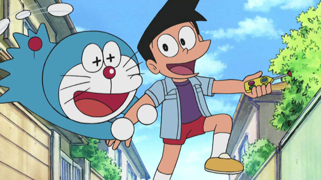
Takeshi Gouda
Doraemon is also good friends with Gian. He helps him in many episodes and also feels sorry for him on some occasions. Gian may seem as a bully, but he always tries to return the favor to Doraemon by helping him out with something or other. Gian has also tricked and cheated Doraemon on occasion, but he seldom does anything like that now. Although Doraemon gets scared like everyone else when one of Gian's concerts take place, he has always been there for him.

Mii Chan
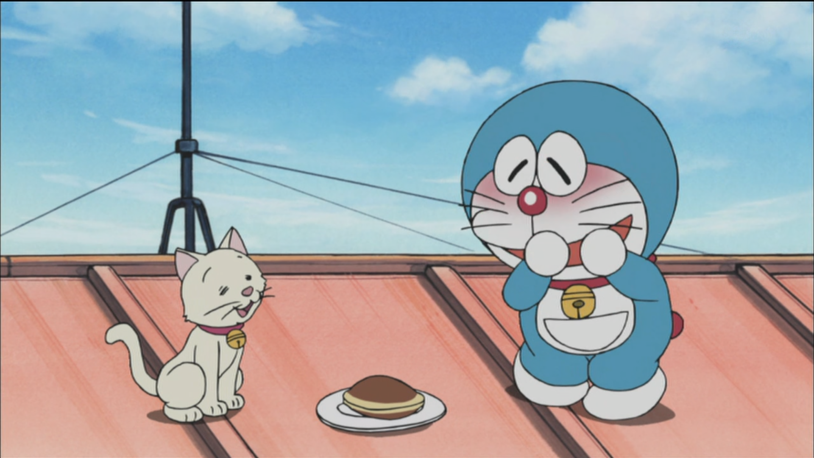
Freed by Doraemon from a cat loather. She is Doraemon's main love interest within the main time period that Nobita is in. The two frequently go on dates together with Doraemon being the one to bring gifts for her.
Gallery
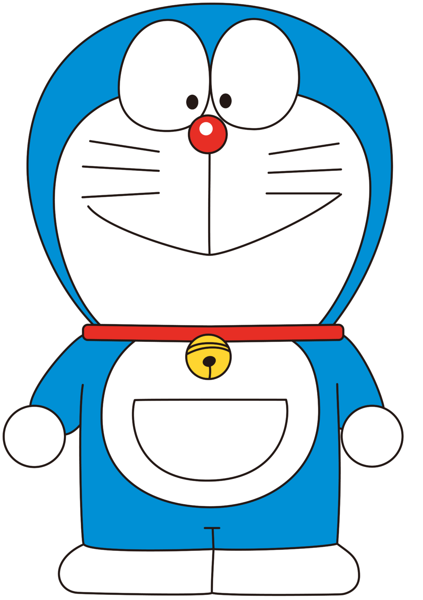
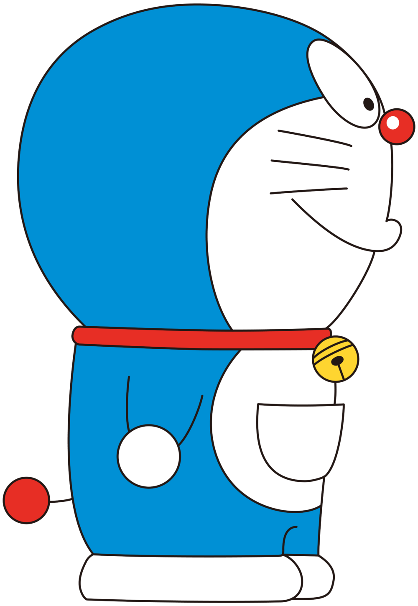
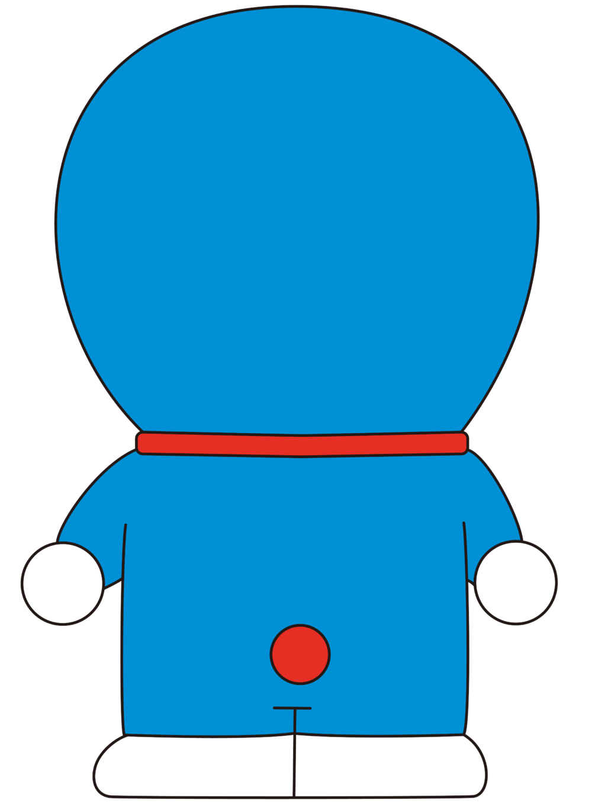
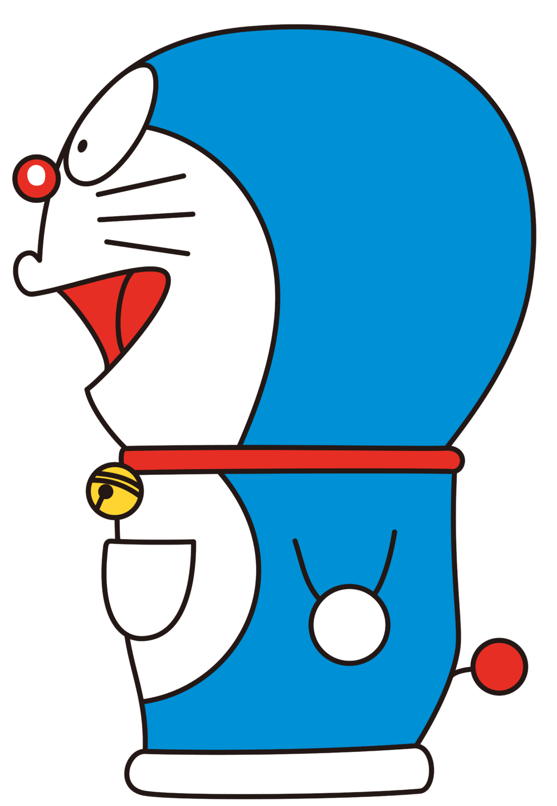
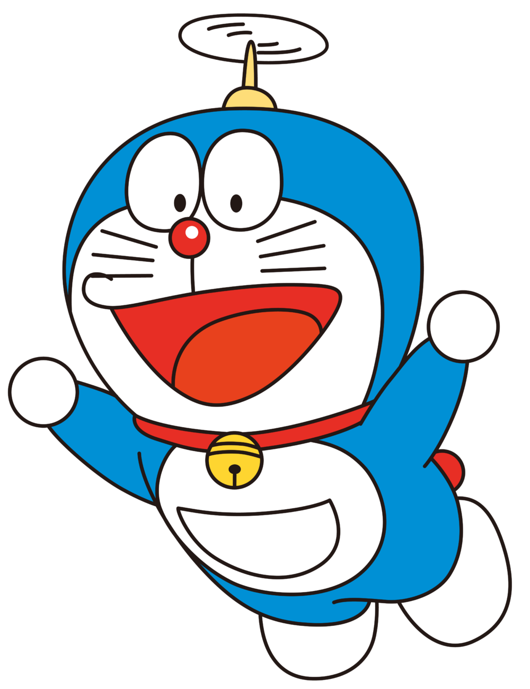
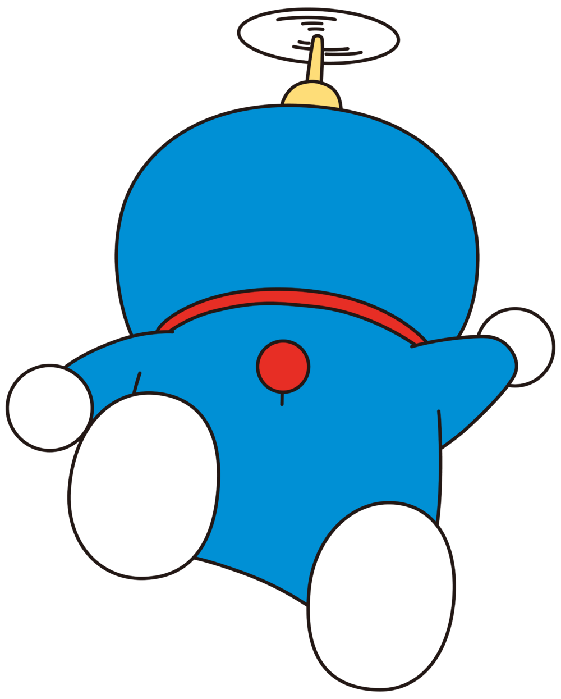